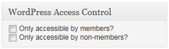
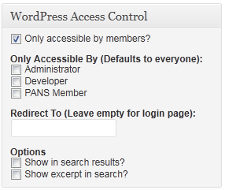
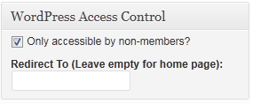
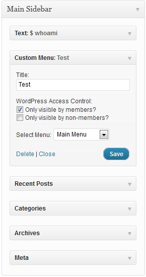
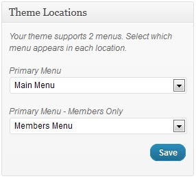

WordPress Access Control Documentation Version 3.1
The complete guide this plugin
WordPress Access Control is an access control plugin for WordPress, and was built by Brandon Wamboldt. If you have questions outside of the scope of this help file, require assistance, want to report a bug, request a feature or anything else, please email me or leave a comment on my blog, http://brandonwamboldt.ca/plugins/members-only-menu-plugin/.
The purpose of WordPress Access Control is to provide an easy interface to users for restricting access to content. It was designed for use on members sites where not all content should be accessible by the public, such as with organizations or pay-sites.
WPAC gives you the ability to restrict content to members, specific roles, or even non-members on a per-page/per-post basis, or using shortcodes. You can still add restricted pages to the navigation, and by default they will only show up to users with the required access. This is an option however.
WPAC also gives you the ability to customize search/archive pages, completing hiding restricted posts/pages from search results if a user can't access them, showing just the title with a customizable message where the excerpt would be, or showing the title and excerpt.
WPAC now gives admins the ability to set the visibility of certain widgets to members only or non-members only, as well as create member only versions of all WordPress nav menus.
This plugin supports custom post types via an easy to use admin option.
WordPress Access Control has only been tested with WordPress 2.9 and greater. WordPress Access Control requires PHP4 or higher, although PHP5 is recommended.
WordPress Access Control may not work with all themes. If you find are using WPAC with a theme and it's not working well, please contact me with the name of the theme as well as a link to the theme, and your PHP version.
Installation is simple, just follow these steps and you should have no problems.
Using the settings screen, you can set many default options for the plugin, which is useful for saving time if most of your pages/posts will have similar access settings. Most of these settings can be overwritten on a per-page/per-post basis.
Make Blog Members Only
This setting will make the blog page itself, as well as any archive
pages restricted to members. Regular pages will still be accessible
to non-members however. This setting uses the is_home() and
is_archive() functions to determine blog/archive pages.
Members Blog Redirect
This setting is a website address to redirect users to if they try to
access the blog or archive pages with the "Make Blog Members Only"
setting active. By default, it will redirect to the login page.
Custom Post Types
This setting allows you to enable the Members Only controls for custom
post types. This setting only works if the custom post type uses the
standard WordPress interface. This option will not be displayed if there
are no custom post types.
Always Accessible By
This will override any per-page or per-post settings and allow the specified user
groups to always have access to members only content. This was to fix a scenario
in which a lesser user such as a Contributor could make content invisible to a
higher user such as an administrator.
Display In Menus
This setting determines how menu items work when a restricted page/post is
added to the navigation and a user doesn't have access to it. You can
show the menu only if a user has access to it, or you can show it all
the time. If you decide to show it all the time, a user who clicks on a menu
item but does not have access to view it will be redirected.
Default Post State
This setting determines the default option when creating a new post. Public
is the default setting and means the post will be accessible to all. Members
Only restricts the post to authenticated users, and Non-Members restricts
the post to unauthenticated users.
Posts: Only Accessible By
This setting determines the default option when creating a new page for which
roles can access the post. This setting is only used if the post is set for
Members Only. Roles are managed using plugins.
Default Page State
This setting determines the default option when creating a new page. Public
is the default setting and means the page will be accessible to all. Members
Only restricts the page to authenticated users, and Non-Members restricts
the page to unauthenticated users.
This setting also acts as
the default for custom post types.
Pages: Only Accessible By
This setting determines the default option when creating a new page for which
roles can access the page. This setting is only used if the page is set for
Members Only. Roles are managed using plugins.
This setting also acts as
the default for custom post types.
Default Redirect For Members Only Pages
This is the default URL to redirect users to when they attempt to access
a restricted page/post.
The link provided here is automatically appended with a redirect_to query
argument, so that the page may redirect the user back if they wish.
Search Options
This setting determines how restricted posts/pages will appear in
search or archive pages. This setting uses is_search()
and is_archive()
to determine use.
If you do not check "Show restricted post excerpts in search results?" the excerpt
will be replaced with text from the below options.
The page settings for this setting determine defaults for custom post types.
Search Excerpt (Posts)/Search Excerpt (Pages)
This text is displayed instead of the post/page excerpt in archive/search pages to users
without the required access, but only if the post/page is set to now show it's
excerpt.
There are two shortcodes available for use with this plugin.
[members][/members] will hide the content within them unless the user is
authenticated. Also works during searching, so that if a user searches for
a term found in the shortcodes, but is not logged in, the page/post will
not show up in the results.
[nonmembers][/nonmembers] will hide the content within them unless the user is not authenticated. Also works during searching, so that if a user searches for a term found in the shortcodes, but is logged in, the page/post will not show up in the results.
By default, when you edit/add a new post/page, the control interface should be displayed on the right, directly above the "Publish" box. If you do not see it, please ensure it is set to display under the "Screen Options" panel.

The default interface is very small, and lacks many options. More options will appear once
you've checked an option.

If you select "Only accessible by members?", several new options appear. The default values
are governed by the options screen, and an explanation of the options are available above
as well.

If you select "Only accessible by non-members?", one new option appears. This is the URL
to redirect a user to, such as the my profile page or even a logout page.
Now, when you add certain supported widgets to a widget area, you have the option to select the visibility of the widget as members only or non-members only. Currently, the only supported widget is the Custom Menu widget. If you would like more widgets added, please contact the developer.

The additional options are limited. You can select "Only visible by members" and the widget will
only be displayed to users who are logged in. If you select "Only visibile by non-members" the
widget will only be displayed to users who are NOT logged in.
Admins now have the ability of creating a second version of any menu that their theme supports, which will only be visible to logged in users.

The second menu in the list, "Primary Menu - Members Only" is automatically generated by this plugin. If
you assign it a menu that is not empty, it will be displayed instead of it's regular version to any logged
in user.
Version 3.1.2 - December 7, 2011
Version 3.1.1 - December 7, 2011
Version 3.1 - December 7, 2011
Version 3.0.5 - June 6, 2011
Version 3.0.4 - June 6, 2011
Version 3.0.3 - June 5, 2011
Version 3.0.2 - June 2, 2011
Version 3.0.1 - June 1, 2011
Version 3.0 - May 26, 2011